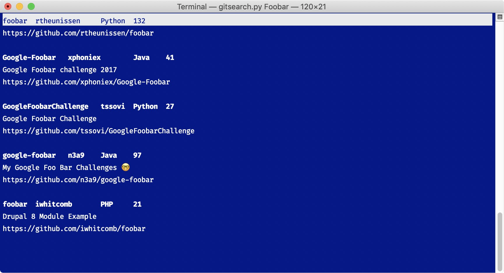

Gitsearch

Gitsearch is a simple command line program that searches for and clones repos from Github. I wrote the program in Python, developing the interface in curses and using GitHub's public API for the search and clone features. Given the difficulties of Python packaging and dependency management, I aimed to minimize external dependencies; Gitsearch has only one, the widely used certifi library.